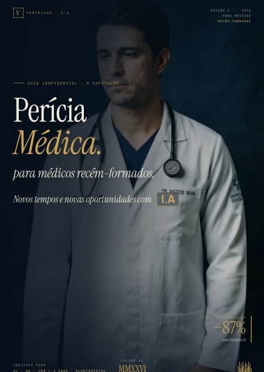

E-book · Veridicus IA
Veridicus IA para médicos recém-formados
Como transformar a perícia médica em uma fonte de renda nobre e previsível logo no início da carreira.
Organização de renda e patrimônio · exclusivo para médicos
Aposentar com tranquilidade. A casa, o carro, a viagem. E a certeza de que sua família segue amparada — mesmo que um dia você não esteja aqui. Nós transformamos a renda do médico em um plano que se sustenta sozinho.
Diagnóstico individual · sem custo · sigilo absoluto

A pergunta que ninguém faz ao médico
O médico fatura bem e, ainda assim, sente que o dinheiro não vira patrimônio. A rotina consome o tempo, a renda chega desorganizada e o futuro fica sempre para depois. Nós começamos pelo que importa pra você — do menor objetivo ao maior — e construímos o caminho até lá.
Saber para onde vai cada real, separar pró-labore de patrimônio e parar de viver no fluxo de caixa do plantão.
Realizar os objetivos de vida com planejamento — sem comprometer o futuro nem sacrificar o presente.
Construir uma renda que não dependa do bisturi nem da escala. Um dia, plantão será escolha — não necessidade.
Garantir renda para a sua família mesmo que um dia você não esteja aqui. O maior dos objetivos — e o que mais costuma ficar esquecido.
O motor do caminho
A perícia médica é uma fonte de renda nobre, previsível e escalável — e quase sempre subaproveitada. Nós estruturamos essa atuação como o motor do seu plano: uma receita que você controla, organiza e faz crescer com método, não com sorte.
Quero estruturar minha perícia →Uma atuação que não depende de escala, com demanda constante e remuneração definida.
Mais renda por hora trabalhada, devolvendo as horas que o plantão tira da sua vida.
Processos, ferramentas e mentoria para sair do zero e ganhar consistência — passo a passo.
Ferramentas, tecnologia e acompanhamento
Não é um curso solto nem uma planilha esquecida na gaveta. É um sistema integrado: a renda da perícia abastece a organização, que constrói o patrimônio, que sustenta a proteção da sua família — e devolve mais tranquilidade para você produzir. O ciclo gira, e gira maior a cada volta.
A perícia médica estruturada gera receita previsível e crescente.
Cada real ganha destino: custo, reserva, patrimônio e objetivos.
O dinheiro organizado vira ativos que trabalham por você.
Sua família amparada e seu futuro garantido — em qualquer cenário.
E o ciclo recomeça — agora com mais base, mais renda e menos esforço.
Plataforma de acompanhamento, indicadores de evolução, materiais de perícia e mentoria contínua — tudo em um só lugar, para você não depender da memória nem da força de vontade.
Materiais para baixar
Dois guias completos sobre perícia médica e o ecossistema Veridicus IA. Abra, leia e salve em PDF — gratuitamente.

E-book · Veridicus IA
Como transformar a perícia médica em uma fonte de renda nobre e previsível logo no início da carreira.

E-book · Perícia do Trabalho
O caminho mais natural para o médico do trabalho assumir a perícia e multiplicar a própria renda.
Começar é simples
Uma conversa individual e sigilosa para entender sua renda, seus objetivos e onde está o gargalo. Sem custo e sem compromisso.
Montamos seu caminho de saída: a perícia como motor de renda, a organização do que entra e a estratégia de patrimônio e proteção.
Você entra no loop virtuoso com ferramentas e mentoria contínua, ajustando a rota enquanto o ciclo gira a seu favor.
Seu caminho de saída começa aqui
Em uma conversa, você enxerga onde sua renda está vazando e como transformá-la em um plano que cuida do seu futuro — e do da sua família.